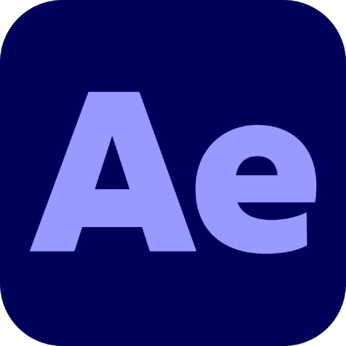
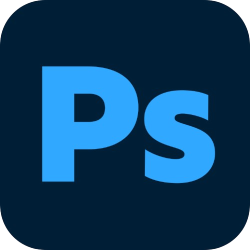
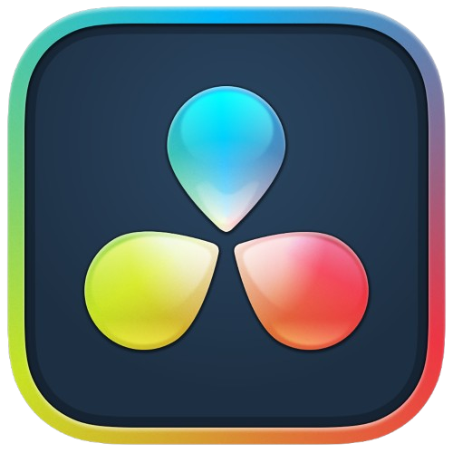
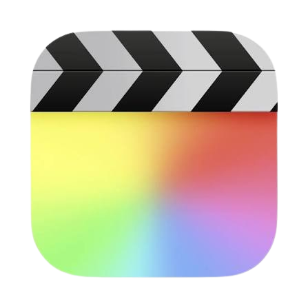
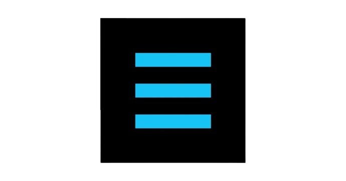

2021 — Present
Ads & Freelancing
Videographer · Editor · Photographer
Brand films and campaigns for Trigam Associates, Bless Retirement Living, Rajagiri Hospital, restaurants, weddings, products and fashion shoots.
About / Résumé
I am Juliet Leo Abishek, a cinematographer and editor working across film, brands, food, documentary and photography. I am drawn to honest human moments, purposeful composition and images that carry a feeling beyond the frame.
Experience
2021 — Present
Brand films and campaigns for Trigam Associates, Bless Retirement Living, Rajagiri Hospital, restaurants, weddings, products and fashion shoots.
2024
Behind-the-scenes videographer for Veera Dheera Sooran, Idly Kadai and Thalaivan Thalaivi.
2020 — 2021
Reporter internships for Neeya Naana and Kannaadi, supporting research, story development and field coordination.
Skills

After Effects Proficient
Photoshop Highly Proficient
DaVinci Resolve Proficient
Final Cut Pro Proficient
ShotDeck ProficientEducation
Capabilities
Tools
Adobe Premiere Pro · DaVinci Resolve · Final Cut Pro · Cubase · Photoshop · Lightroom
Languages
Tamil · English · Malayalam